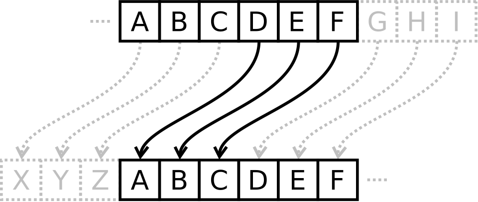

Intro to Cryptography
April King
- Describe the history and purpose of cryptography
- Build a solid understanding of cryptographic primitives
- Learn how cryptographic primitives are combined to make a complete cryptographic system
- Recognize the shortcomings and pitfalls inherent in building and implementing cryptographic systems
Learning Objectives
Cryptographic Terminology
Eye-glazing definitions belooooooow!
↓
- Cryptography
- Practice and study of security communications in the presence of third parties
- Plaintext (cleartext)
- Data or text that has not been encrypted
- Ciphertext
- The result of encryption performed on plaintext
- Algorithm
- A self-contained series of instructions that perform a function
- Cipher
- An algorithm that performs encryption and decryption
- Encryption
- Using a cipher to transform plaintext into ciphertext
- Decryption
- Using a cipher to transform ciphertext into plaintext
- Key
- A piece of information known only to one or both parties that is fed into a cipher and determines its output
- Key exchange
- The process by which two parties agree on upon a mutual key or key pair
- Key space
- The set of all possible keys
- Brute-force attack
- Attempting decryption with all possible key combinations until the correct key is found
- Cipher suite
- Combination of key exchange, authentication, encryption, and message authentication code (MAC)
- Cryptographic system (cryptosystem)
- A combination of cryptographic algorithms that implement a security service, usually encompassing key generation, encryption, and decryption
- Message authentication code (MAC)
- A small piece of information used to authenticate a message and to provide protection against tampering
- Cryptanalysis
- The study of breaking, weakening, or bypassing cryptosystems
- Steganography
- Concealing a message (image, file, text, etc.) within another message
- Placeholder names
- Names such as Alice, Bob, Eve (the eavesdropper), or Mallory (the malicious attacker) used as shorthand when describing cryptosystems
Cryptography History
Let's take a ride in the way back machine!
Beautiful Origin Story
Cryptography dates back to approximately 1500 BCE
- Original goal of cryptography:
- Keeping messages confidential, for the purposes of commercial trade secrets and military communications
Historic Cryptography
- Substitution cipher
- Characters in plaintext are replaced with other characters
- Transposition ciphers
- Characters in plaintext are rearranged with other characters
This comprised the entirety of cryptography up until modern cryptography begins with World War II and the creation of the Enigma machine
Caesar Cipher
- Shift each letter in message three characters to the left 
Example:
MOZILLA IS MY DINOSAUR JLWFIIX EP JV AFKLPXRO
Conceptualize
- Algorithm
- Replace each letter with the letter three characters to the left
- Cipher
- Caesar (rotational) cipher, a substitution cipher
- Key
- Key is a -3 (or 23) letter rotation (ROT-23)
- Key space
- 26, since you have 26 possible rotation possibilities
That said, 26 doesn't make for the best possible key
Substitution Cipher
| A | B | C | D | E | F | G | H | I | J | K | L | M | N | O | P | Q | R | S | T | U | V | W | X | Y | Z |
| G | J | Z | X | C | K | W | U | F | E | S | Q | D | A | P | R | I | L | O | M | Y | T | V | H | B | N |
Example:
MOZILLA IS MY DINOSAUR DPNFQQG FO DB XFAPOGYL
So why might this simple substutition cipher not be secure?
Frequency Analysis

It turns out that not every letter appears equally as often
Frequency Analysis

Ideally, each letter should appear equally as often
Not to worry, the 1550s have us covered...
Vigenère Cipher

Example:
Plaintext: MOZILLA IS MY DINOSAUR Keyword: WHIMSYW HI MS YWHIMSYW Ciphertext: IVHUDJW PA YQ AEUWESSN